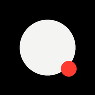

Luz de Tela
Uma fonte de luz ampla e ajustável usando a tela que já está com você. Sem cadastro, sem anúncios e sem claridade inesperada ao abrir.
Abrir a luzPor que existe
A lanterna do celular é útil, mas pode ser forte e concentrada demais em um ambiente escuro. O Luz de Tela oferece uma iluminação mais espalhada, com cor e intensidade sob controle.
Ele começa no preto por escolha. A luz só aparece depois que você decide qual tom usar e toca em acender.
Onde ajuda
- Uma luz suave para o quarto ou para encontrar algo à noite.
- Preenchimento próximo para selfies, retratos e fotos de produtos.
- Apoio de iluminação em videochamadas.
- Cores livres para ambientes e efeitos visuais.
Privacidade simples
O Luz de Tela não pede conta e não coleta dados pessoais. A cor e a intensidade escolhidas ficam salvas somente no aparelho usado.
Depois do primeiro acesso, os arquivos essenciais também podem continuar disponíveis sem conexão.
Um limite honesto
A potência final depende da tela e do brilho configurado no aparelho. O Luz de Tela funciona bem como apoio próximo, mas não pretende substituir um painel de LED profissional.